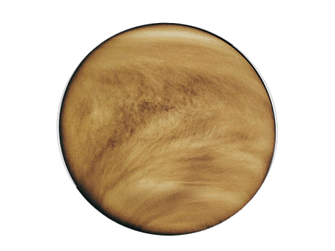

Welcome to our comprehensive guide to the solar system! Dive into
the fascinating world of our cosmic neighborhood. From the blazing
Sun at the center to the icy outer reaches, discover detailed
information about the planets, moons, and other celestial bodies
that make up our solar system.
Our solar system is a complex and dynamic system
consisting of the Sun, eight planets, over 200 moons, and countless
smaller objects such as asteroids, comets, and meteoroids. Each of
these celestial bodies has its own unique characteristics and
history, contributing to the diverse tapestry of our cosmic
surroundings.
Explore the following sections to learn more about the wonders of
the solar system:

- The Sun : Learn about the star at the heart of our solar system, its structure, and its vital role in supporting life on Earth.
- Planets : Discover detailed information about the eight planets, from the rocky inner planets to the gas and ice giants of the outer solar system.
- Moons : Explore the fascinating moons that orbit the planets, each with its own unique features and mysteries.
- Other Celestial Bodies : Find out about the smaller objects in the solar system, including asteroids, comets, and dwarf planets.
- Exploration : Read about the past, present, and future missions that have expanded our understanding of the solar system.
- Fun Facts : Enjoy interesting and surprising facts about the solar system.
- Educational Resources : Access interactive tools, reading materials, and educational content to further your knowledge.
Our goal is to provide you with a thorough understanding of the solar system, its formation, its components, and its ongoing exploration. Whether you're a student, a teacher, or simply a curious explorer, we hope you find this guide both informative and inspiring.
The Sun
The Heart of Our Solar System

- Overview : The Sun is a G-type main-sequence star (G2V) located at the center of our solar system. It is about 4.6 billion years old and is composed primarily of hydrogen (about 75%) and helium (about 24%).
-
Structure :
- Core : The central region where nuclear fusion occurs, converting hydrogen into helium and releasing vast amounts of energy.
- Radiative Zone : The layer where energy produced in the core moves outward by radiation.
- Convective Zone : outer layer where energy is transferred by convection.
- Photosphere : The visible surface of the Sun, where sunspots appear.
- Chromosphere : A layer above the photosphere that is visible during solar eclipses.
- Corona : The outermost part of the Sun's atmosphere, extending millions of kilometers into space, also visible during eclipses.
- Significance : The Sun’s energy drives the climate and weather on Earth, and it supports life through photosynthesis.
Mercury

-
Overview
- Status: Mercury is the closest planet to the Sun and the smallest planet in the solar system. It has a rocky surface and lacks a significant atmosphere.
- Discovery: Known to ancient civilizations, Mercury was observed by the Babylonians and Greeks. It was named after the Roman messenger god due to its swift movement across the sky.
-
Orbit and Rotation
- Orbit: Mercury orbits the Sun at an average distance of 57.9 million kilometers (36 million miles). It takes 88 Earth days to complete one orbit.
- Rotation: Mercury has a rotation period of 59 Earth days. Its day is longer than its year, resulting in a day lasting almost twice as long as a year.
-
Composition and Structure
- Surface: Characterized by a heavily cratered terrain, with large impact basins such as the Caloris Basin. The surface is covered with plains and highlands.
- Atmosphere: Very thin, composed primarily of oxygen, sodium, hydrogen, and helium. The lack of a significant atmosphere means that Mercury experiences extreme temperature fluctuations.
- Interior: Has a large iron core that makes up a significant portion of the planet’s volume, with a silicate mantle and crust.
-
Notable Surface Features
- Caloris Basin: One of the largest and oldest impact basins in the solar system, with a diameter of about 1,550 kilometers (960 miles).
- Scarps: Long cliffs that formed as Mercury’s interior cooled and contracted, causing the planet’s crust to buckle and create ridges.
-
Exploration
- Mariner 10: NASA’s Mariner 10 mission conducted the first flybys of Mercury in the 1970s, providing the first close-up images of the planet.
- MESSENGER: NASA’s MESSENGER spacecraft orbited Mercury from 2011 to 2015, mapping its surface and studying its composition.
-
Interesting Facts
- Temperature Extremes: Mercury has the greatest temperature variation of any planet, with temperatures ranging from -173°C (-280°F) at night to 427°C (800°F) during the day.
- Day Length: A day on Mercury (one rotation) is equivalent to 176 Earth days.
Venus

-
Overview
- Status: Venus is the second planet from the Sun and is often called Earth's "sister planet" due to its similar size and composition.
- Discovery: Known since ancient times, Venus has been observed by various civilizations. It was named after the Roman goddess of love and beauty.
-
Orbit and Rotation
- Orbit: Venus orbits the Sun at an average distance of 108.2 million kilometers (67.2 million miles). It takes 225 Earth days to complete one orbit.
- Rotation: Venus has a retrograde rotation, spinning in the opposite direction to most planets. Its rotation period is 243 Earth days, making a day on Venus longer than its year.
-
Composition and Structure
- Surface: Covered by volcanic plains, large shield volcanoes, and mountains. The surface is obscured by thick clouds of sulfuric acid.
- Atmosphere: Extremely thick and toxic, composed primarily of carbon dioxide, with clouds of sulfuric acid. This dense atmosphere creates a runaway greenhouse effect, making Venus the hottest planet.
- Interior: Similar to Earth’s, with a core, mantle, and crust. The exact details of its internal structure are still being studied.
-
Notable Surface Features
- Sistina Mons:One of the largest volcanoes on Venus, with a height of about 2,000 meters (6,600 feet).
- Ishtar Terra:A large highland region on Venus with features including volcanic plains and mountains.
-
Exploration
- Venera Program: Soviet missions in the 1960s and 1970s were the first to land on Venus and return data, revealing the planet's harsh surface conditions.
- Magellan Mission: NASA’s Magellan spacecraft mapped Venus’s surface using radar from 1990 to 1994.
-
Interesting Facts
- Hottest Planet:Venus has a surface temperature of around 465°C (869°F), making it the hottest planet in the solar system.
- Retrograde Rotation: Venus rotates in the opposite direction to most planets, so its Sun rises in the west and sets in the east.
Earth

-
Overview
- Status: Earth is the third planet from the Sun and the only known planet to support life. It has a diverse environment, including land, water, and atmosphere.
- Discovery: Known to ancient civilizations, Earth has been studied for thousands of years. It is the only planet in the solar system known to host life.
-
Orbit and Rotation
- Orbit: Earth orbits the Sun at an average distance of 149.6 million kilometers (93 million miles). It takes 365.25 Earth days to complete one orbit.
- Rotation: Earth rotates on its axis every 24 hours, giving us day and night. Its axial tilt of 23.5 degrees is responsible for the changing seasons.
-
Composition and Structure
- Surface: Composed of continents and oceans, with diverse landscapes including mountains, plains, deserts, and ice caps.
- Atmosphere: Composed primarily of nitrogen (78%) and oxygen (21%), with trace gases including argon and carbon dioxide. This atmosphere supports life and regulates climate.
- Interior: Consists of a core (inner and outer), mantle, and crust. The mantle is convecting, driving tectonic plate movements and geological activity.
-
Notable Surface Features
- Mount Everest: The highest mountain on Earth, with a peak that reaches 8,848 meters (29,029 feet) above sea level.
- Mariana Trench: The deepest part of the world’s oceans, reaching a depth of about 11,034 meters (36,201 feet).
-
Moons
- Moon: Earth’s only natural satellite, which plays a crucial role in stabilizing the planet’s axial tilt and influencing tides.
-
Exploration
- Apollo Program: NASA’s Apollo missions successfully landed humans on the Moon between 1969 and 1972.
- International Space Station (ISS): A space station in low Earth orbit that serves as a laboratory for scientific research and international cooperation.
-
Interesting Facts
- Water Coverage: Approximately 71% of Earth’s surface is covered by water.
- Biosphere: Earth supports a wide variety of ecosystems and life forms, making it unique among known planets.
Mars

-
Overview
- Status: Mars is the fourth planet from the Sun and is often referred to as the Red Planet due to its reddish appearance.
- Discovery: Known since ancient times, Mars was named after the Roman god of war due to its blood-red color.
-
Orbit and Rotation
- Orbit: Mars orbits the Sun at an average distance of 227.9 million kilometers (141.6 million miles). It takes 687 Earth days to complete one orbit.
- Rotation: Mars has a rotation period of about 24.6 Earth hours, making its day very similar in length to an Earth day.
-
Composition and Structure
- Surface: Features include the tallest volcano in the solar system (Olympus Mons) and the largest canyon (Valles Marineris). The surface is dusty and covered with iron oxide.
- Atmosphere: Thin, composed primarily of carbon dioxide, with traces of nitrogen and argon. It experiences large temperature variations and dust storms.
- Interior: Has a core that is thought to be partially liquid, surrounded by a mantle and crust. Evidence of past volcanic activity and tectonic movement exists.
-
Notable Surface Features
- Olympus Mons: A shield volcano that stands about 22 kilometers (13.6 miles) high.
- Valles Marineris: A canyon system stretching over 4,000 kilometers (2,500 miles) long and up to 7 kilometers (4.3 miles) deep.
-
Moons
- Phobos and Deimos: Mars has two small, irregularly shaped moons. Phobos is the larger and closer of the two, while Deimos is smaller and farther away.
-
Exploration
- Curiosity Rover: NASA’s Curiosity rover has been exploring Mars’s surface since 2012, studying its geology and searching for signs of past life.
- Perseverance Rover: NASA’s Perseverance rover landed on Mars in February 2021 and is conducting experiments to search for signs of ancient life and collect samples for future return.
-
Interesting Facts
- Fast Winds: Mars has evidence of ancient river valleys and lake beds, suggesting it once had liquid water on its surface.
- Day Length: A day on Mars is about 24.6 hours, close to the length of an Earth day.
Jupiter

-
Overview
- Status: Jupiter is the fifth planet from the Sun and the largest in the solar system. It is a gas giant with a massive size and strong magnetic field.
- Discovery: Known since ancient times, Jupiter was observed by Galileo Galilei in the early 17th century. It is named after the king of the Roman gods.
-
Orbit and Rotation
- Orbit: Jupiter orbits the Sun at an average distance of 778.5 million kilometers (484 million miles). It takes 11.9 Earth years to complete one orbit.
- Rotation: Jupiter has the shortest day of any planet, completing a rotation in just about 10 hours.
-
Composition and Structure
- Surface: Jupiter does not have a solid surface; its visible features are clouds of hydrogen and helium, with deeper layers transitioning to liquid and metallic hydrogen.
- Atmosphere: Composed primarily of hydrogen and helium, with traces of methane, ammonia, and water vapor. The atmosphere features strong winds and storm systems.
- Interior: Likely has a rocky core surrounded by a thick layer of metallic hydrogen, with an outer layer of molecular hydrogen and helium.
-
Notable Surface Features
- Great Red Spot: A giant storm system that has been raging for at least 400 years. It is about 1.3 times the diameter of Earth.
- Bands and Zones: Jupiter’s atmosphere is divided into dark bands (zones) and light bands (belts) that are caused by differential rotation and convection.
-
Moons
- Galilean Moons: Jupiter has four large moons discovered by Galileo Galilei: Io, Europa, Ganymede, and Callisto.
- Io: Known for its intense volcanic activity and numerous volcanoes.
- Europa: Has a smooth, ice-covered surface with a subsurface ocean that may harbor life.
- Ganymede: The largest moon in the solar system, with its own magnetic field.
- Callisto: Has the most heavily cratered surface among the Galilean moons.
-
Exploration
- Galileo Mission: NASA’s Galileo spacecraft orbited Jupiter from 1995 to 2003, providing detailed observations of the planet and its moons.
- Juno Mission: NASA’s Juno spacecraft has been orbiting Jupiter since 2016, studying its atmosphere, magnetic field, and gravitational field.
-
Interesting Facts
- Magnetic Field: Jupiter has the strongest magnetic field of any planet in the solar system, creating intense radiation belts
- Ring System: Jupiter has a faint ring system made up of dust particles, which was discovered by the Voyager spacecraft.
Saturn

-
Overview
- Status : Saturn is the sixth planet from the Sun and is renowned for its extensive and bright ring system. It is a gas giant with a low density.
- Discovery : Known since ancient times, Saturn was observed by Galileo Galilei. It is named after the Roman god of agriculture.
-
Orbit and Rotation
- Orbit : Saturn orbits the Sun at an average distance of 1.4 billion kilometers (870 million miles). It takes 29.5 Earth years to complete one orbit.
- Rotation : Saturn has a rotation period of about 10.7 hours, making its day much shorter than its year.
-
Composition and Structure
- Surface : Like Jupiter, Saturn does not have a solid surface. It is composed of layers of hydrogen and helium, with deeper layers consisting of liquid metallic hydrogen.
- Atmosphere : Composed primarily of hydrogen and helium, with traces of methane, ammonia, and water vapor. The atmosphere features strong winds and large storms.
- Interior : Saturn’s interior consists of a rocky core surrounded by a thick layer of metallic hydrogen and an outer layer of molecular hydrogen and helium.
-
Notable Surface Features
- Rings : Saturn’s rings are composed of ice and rock particles of varying sizes. They are the most prominent and complex ring system in the solar system.
- Storms : Saturn has large storm systems, including the long-lived hexagon-shaped storm at its north pole.
-
Moons
- Titan : Saturn’s largest moon, with a thick atmosphere and surface lakes of liquid methane and ethane.
- Enceladus : Known for its cryovolcanic activity, with geysers ejecting water ice and organic molecules from its subsurface ocean.
- Mimas : Notable for its large impact crater, Herschel, which gives it a resemblance to the Death Star from Star Wars.
-
Exploration
- Cassini-Huygens Mission : The Cassini spacecraft orbited Saturn from 2004 to 2017, providing detailed images and data on the planet, its rings, and its moons. The Huygens probe landed on Titan in 2005.
- Voyager Missions : The Voyager 1 and Voyager 2 spacecraft provided the first close-up images of Saturn and its rings in the early 1980s.
-
Interesting Facts
- Density : Saturn is the least dense planet in the solar system; it would float in water if a large enough body of water could be found.
- Ring System : The rings are thought to be relatively young, possibly formed from the debris of a moon or comet that was shattered by Saturn’s gravity
Uranus

-
Overview
- Status : Uranus is the seventh planet from the Sun and is known for its unique tilt, which causes extreme seasonal variations.
- Discovery : Discovered by William Herschel in 1781, Uranus was the first planet discovered using a telescope. It was named after the Greek god of the sky.
-
Orbit and Rotation
- Orbit : Uranus orbits the Sun at an average distance of 2.9 billion kilometers (1.8 billion miles). It takes 84 Earth years to complete one orbit.
- Rotation : Uranus has an extreme axial tilt of about 98 degrees, causing it to roll on its side as it orbits the Sun. Its rotation period is about 17.9 hours.
-
Composition and Structure
- Surface : Like other gas giants, Uranus does not have a solid surface. It is composed of hydrogen, helium, and methane.
- Atmosphere : The atmosphere is primarily composed of hydrogen and helium, with a significant amount of methane, which gives the planet its blue color. Uranus’s atmosphere is cooler than that of Jupiter and Saturn.
- Interior : Uranus has a rocky core surrounded by a mantle of ice (water, ammonia, and methane) and an outer layer of hydrogen and helium.
-
Notable Surface Features
- Great Dark Spot : A large storm system similar to Jupiter’s Great Red Spot, though less prominent.
- Ring System : Uranus has a system of narrow, faint rings composed mainly of dark particles. The rings were discovered by Voyager 2.
-
Moons
- Miranda : Known for its dramatic geological features, including canyons and ridges.
- Titania : The largest moon of Uranus, with a surface marked by both large craters and valleys.
- Oberon and Umbriel : Other significant moons, with Oberon being the second-largest and Umbriel having a heavily cratered surface.
-
Exploration
- Voyager 2 : The only spacecraft to have visited Uranus, Voyager 2 conducted a flyby in 1986, providing valuable data on the planet’s atmosphere, rings, and moons.
-
Interesting Facts
- Tilted Axis : Uranus’s extreme tilt means that its poles experience 42-year-long periods of continuous daylight followed by 42 years of darkness.
- Magnetic Field : The magnetic field of Uranus is tilted at an angle relative to its rotation axis, which is unusual compared to other planets.
Neptune

-
Overview
- Status : Neptune is the eighth and farthest planet from the Sun, known for its striking blue color and dynamic weather systems.
- Discovery : Discovered in 1846 through mathematical predictions rather than direct observation, Neptune was named after the Roman god of the sea.
-
Orbit and Rotation
- Orbit : Neptune orbits the Sun at an average distance of 4.5 billion kilometers (2.8 billion miles). It takes 164.8 Earth years to complete one orbit.
- Rotation : Neptune has a rotation period of about 16 hours. Its atmosphere is known for its high-speed winds.
-
Composition and Structure
- Surface : Neptune does not have a solid surface. It is composed of hydrogen, helium, and methane.
- Atmosphere : The atmosphere is mostly hydrogen and helium, with methane giving Neptune its blue color. It experiences some of the fastest winds in the solar system.
- Interior : Neptune has a rocky core surrounded by a thick mantle of water, ammonia, and methane, and an outer layer of hydrogen and helium.
-
Notable Surface Features
- Great Dark Spot : A massive storm system similar to Jupiter’s Great Red Spot, though it appears to change and disappear over time.
-
Moons
- Triton : The largest moon of Neptune, known for its retrograde orbit, indicating it was captured by Neptune’s gravity. It has geysers that erupt nitrogen gas.
- Nereid : A small, irregularly shaped moon with a highly elliptical orbit.
- Proteus and Larissa : Other notable moons, with Proteus being the second-largest and having a heavily cratered surface.
-
Exploration
- Voyager 2 : The only spacecraft to have visited Neptune, conducting a flyby in 1989. It provided the first detailed images and data on Neptune’s rings, moons, and atmosphere.
-
Interesting Facts
- Fast Winds : Neptune’s winds can reach speeds of up to 2,100 kilometers per hour (1,300 miles per hour), making it one of the windiest planets in the solar system.
- Magnetic Field : Neptune’s magnetic field is tilted relative to its rotation axis and is offset from the center of the planet.
Pluto

-
Overview
- Status : Once considered the ninth planet of our solar system, Pluto was reclassified as a dwarf planet by the International Astronomical Union (IAU) in 2006. Despite its reclassification, Pluto remains an object of significant interest and study.
- Discovery : Discovered by Clyde Tombaugh in 1930 at the Lowell Observatory in Arizona. Its discovery was a result of a search for a suspected ninth planet beyond Neptune.
-
Orbit and Rotation
- Orbit : Pluto has an elliptical and highly inclined orbit that takes it from 4.4 billion kilometers (2.7 billion miles) to 7.4 billion kilometers (4.6 billion miles) from the Sun. It takes 248 Earth years to complete one orbit around the Sun.
- Rotation : Pluto has a rotation period of about 6.4 Earth days. Interestingly, its rotation is retrograde, meaning it spins in the opposite direction to most planets in the solar system.
-
Composition and Structure
- Surface : Composed of a mixture of nitrogen, methane, and carbon monoxide ices. The surface features diverse geological structures, including mountains, valleys, plains, and craters.
- Atmosphere : Pluto has a thin atmosphere composed primarily of nitrogen, with traces of methane and carbon monoxide. The atmosphere undergoes seasonal changes, expanding when Pluto is closer to the Sun and freezing onto the surface as it moves farther away.
- Interior : Believed to have a rocky core surrounded by a mantle of water ice, with the possibility of a subsurface ocean.
-
Notable Surface Features
- Tombaugh Regio : A large, bright, heart-shaped region on Pluto's surface named in honor of its discoverer. The left lobe of the "heart" is a vast, icy plain known as Sputnik Planitia.
- Sputnik Planitia : An enormous glacier made of nitrogen and other exotic ices. This region exhibits evidence of convection cells and possible cryovolcanism.
- Mountains Pluto has mountain ranges composed of water ice, which behaves like rock at the extremely low temperatures found there. Notable ranges include the Norgay Montes and Hillary Montes.
-
Moons
- Charon : Pluto's largest moon, nearly half its size, forming a binary system with Pluto. Charon's surface is covered with water ice and exhibits a large reddish-brown cap at its north pole, likely composed of tholins.
- Other Moons : Pluto has four smaller moons: Styx, Nix, Kerberos, and Hydra. These moons are irregularly shaped and have chaotic orbits due to Pluto and Charon's gravitational influence.
-
Exploration
- New Horizons Mission : NASA's New Horizons spacecraft performed a historic flyby of Pluto on July 14, 2015, providing the first close-up images and data of Pluto and its moons. This mission revolutionized our understanding of Pluto, revealing its complex geology and diverse surface features.
-
Interesting Facts
- Pluto's Size : Pluto is about 2,377 kilometers (1,477 miles) in diameter, making it about 1/6th the width of Earth and smaller than Earth's Moon.
- Climate and Seasons : Pluto experiences extreme seasonal variations due to its highly elliptical orbit and axial tilt. These changes can cause significant differences in temperature and atmospheric pressure over its long year.
- Historical Debate : The reclassification of Pluto from a planet to a dwarf planet sparked significant public debate and interest, highlighting the evolving nature of scientific understanding and classification.
Pluto remains a fascinating object of study, offering insights into the outer regions of our solar system and the processes that govern planetary bodies. Its unique characteristics and the wealth of data from the New Horizons mission continue to captivate scientists and the public alike.